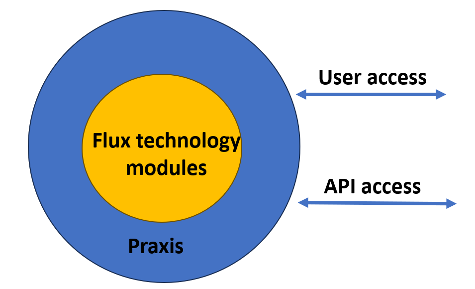

Understanding of the Metamation products

In a professional installation Praxis encapsulates in a smart factory all Flux functionality. The main CRA relevant functionality will be covered by Praxis (user access, communication to other systems, data storage).
Target of the paper: This paper should initiate a discussion where improvement are to be done to get a security level 3 certificate.
Security Level 3 (SL 3) in IEC 62443 is designed to protect against intentional security breaches by sophisticated and well-resourced attackers with moderate skills. Achieving SL 3 requires implementing robust technical, administrative, and physical controls to safeguard industrial automation and control systems.
-
Sonarcloud testing
-
Penetration testing
-
Network security audit